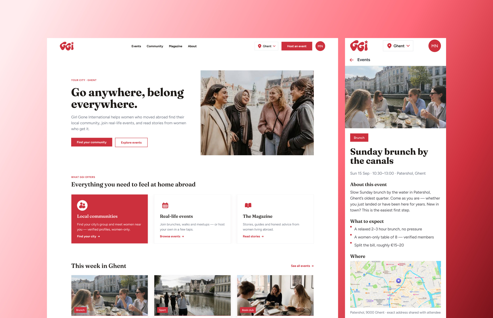
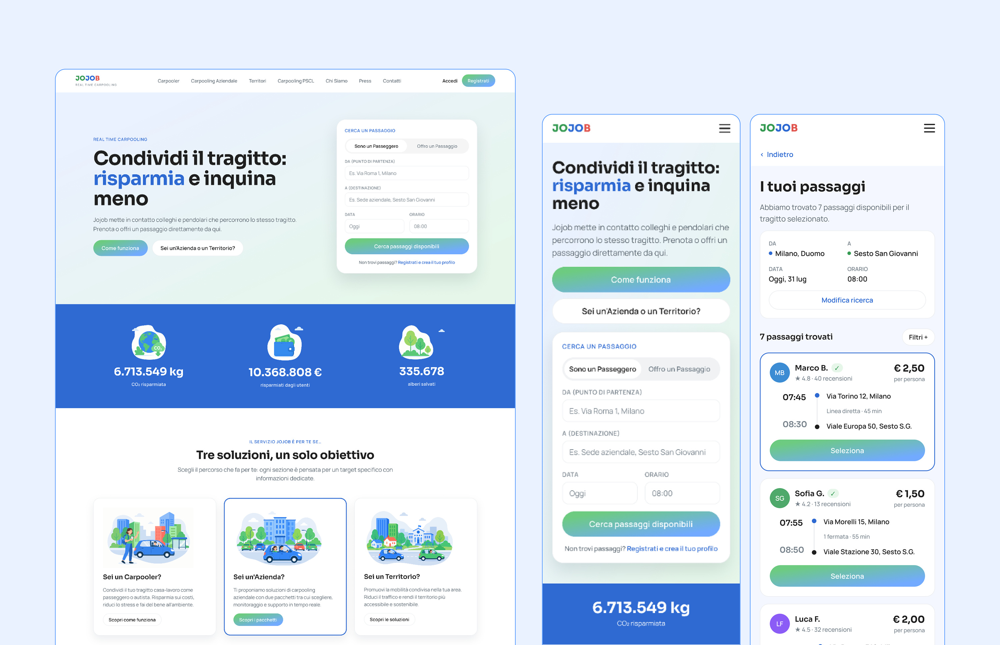
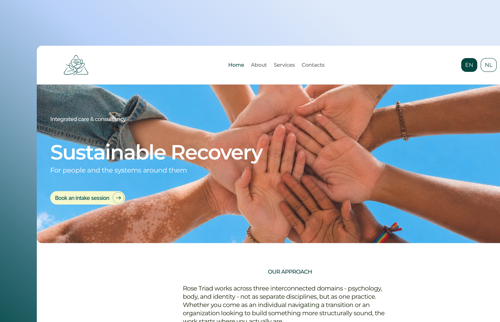
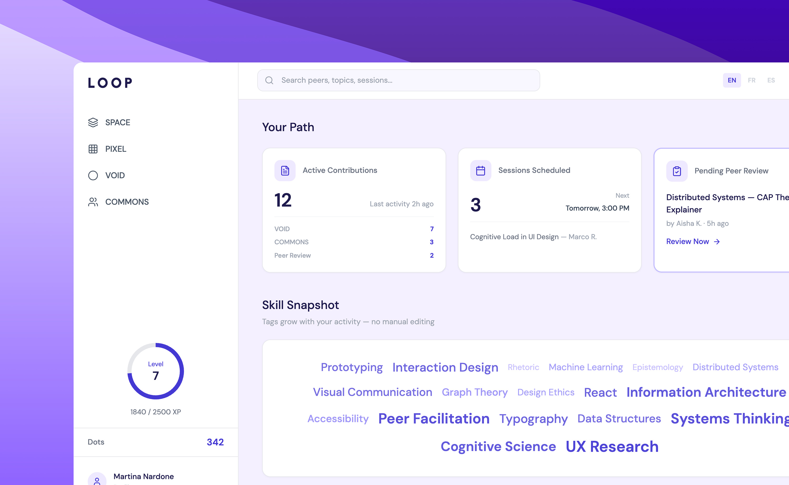

Evolving a 500K community of women living abroad into one safe events & community web app.

A research-led UX audit and redesign of a real-time carpooling platform — heuristic evaluation, user research and a full WCAG 2.2 accessibility audit, carried through to a high-fidelity redesign.

End-to-end website redesign for an integrated care & consultancy practice in Ghent — from a single landing page to a structured, bilingual site built around two distinct audiences.

A two-day AI-assisted product concept for informal peer learning — lowering the social cost of sharing small pieces of knowledge.
